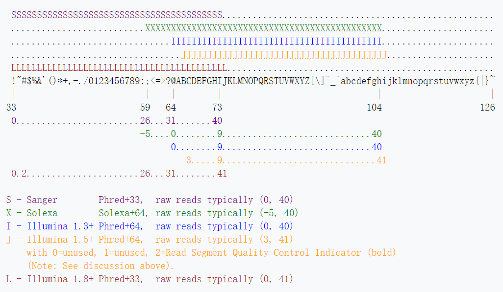
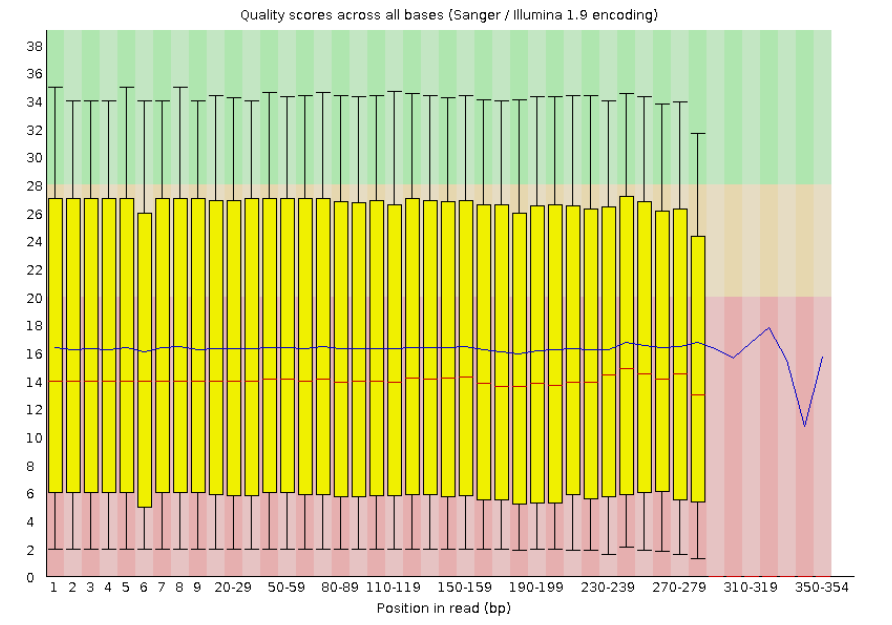

Linux --fasta和fastq格式文件处理
fasta
fasta格式是一种基于文本用于表示核酸序列或多肽序列的格式。其中核酸或氨基酸均以单个字母来表示，且允许在序列前添加序列名及注释。
- 以“>”开头，
- gi|gi号|来源标识|序列标识（接收号/名称等）如“gi|187608668|ref|NM_001043364.2|”
- 序列的描述信息
- 换行后是序列信息，序列中允许空格，换行，空行，直到下一个大于号，表示该序列的结束
查看fasta文件
1 | $ less reads_1.fa |
fastq
fastq是一种存储了生物序列（通常是核酸序列）以及相应的质量评价的文本格式。
- 第一行由‘@’开始，后面跟着序列的描述信息，这点跟FASTA格式是一样
- 第二行是序列
- 第三行由’+’开始，后面跟序列描述信息或什么都不加
- 第四行是第二行测序质量评价（quality values)，字符数跟第二行的序列是相等
查看fastq文件
1 | $ less reads_1.fq |
A quality value Q is an integer mapping of p (i.e., the probability that the corresponding base call is incorrect). Two different equations have been in use. The first is the standard Sanger variant to assess reliability of a base call, otherwise known as Phred quality score: $Q_{sanger}=−10log_{10}P$
S-Sanger：碱基质量从0-40，既ASCii码为从 “！”（33+0）到“I”(33+40）。可用得分（0-40），典型得分（0-93）。
另可看

fasta和fastq格式文件的shell小练习
下载bowtie2软件后拿到示例数据：
1 | mkdir -p ~/biosoft |
1.统计reads_1.fq 文件中共有多少条序列信息
1 | $ less reads_1.fq |paste - - - - |cut -f 1|wc -l |
wc: Print newline, word, and byte counts for each FILE
而下面这个代码是错误的，因为质量值即fq文件中每一条reads的第四行有可能是@开头，所以变多了
1 | $ less reads_1.fq |grep ^@|wc -l |
2.输出所有的reads_1.fq文件中的标识符(即以@开头的那一行)
1 | $ less reads_1.fq |paste - - - - |cut -f 1|less -S |
或者使用sed命令
1 | $ sed -n '1~4p' reads_1.fq |less -S |
1~4p: 每隔四行显示第一行；1,4p: 显示一至四行
3.输出reads_1.fq文件中的 所有序列信息(即每个序列的第二行)
4.输出以‘+’及其后面的描述信息(即每个序列的第三行)
5.输出质量值信息(即每个序列的第四行)
做法类似 2）
6.计算reads_1.fq 文件含有N碱基的reads个数
1 | $ less reads_1.fq |paste - - - - |cut -f 2|grep N|wc -l |
7.统计文件中reads_1.fq文件里面的序列的碱基总数
1 | $ less reads_1.fq |paste - - - - |cut -f 2|grep -i -o [ATCGN]|wc -l |
或者
1 | $ less reads_1.fq|paste - - - -|cut -f 2 |awk '{sum+=length($0)}END{print sum}' |
或者
1 | $ awk '{if(NR%4==2)print length}' reads_1.fq|paste -sd +|bc |
-s 纵向变横向连接
-d + 用加号连接
bc 命令是任意精度计算器语言,通常在linux下当计算器用。 它类似基本的计算器, 使用这个计算器可以做基本的数学运算。
以下代码多出10000个回车符
1 | $ less reads_1.fq |paste - - - - |cut -f 2|wc -m |
8.计算reads_1.fq 所有的reads中N碱基的总数
1 | $ less reads_1.fq |paste - - - - |cut -f 2|grep -i -o [N]|wc -l |
-i, –ignore-case ignore case distinctions 不区分大小写
-o, –only-matching show only the part of a line matching PATTERN
9.统计reads_1.fq 中测序碱基质量值恰好为Q20的个数
1 | $ python -c 'print (chr(33+20))' |
10.统计reads_1.fq 中测序碱基质量值恰好为Q30的个数
1 | $ python -c 'print (chr(33+30))' |
11.统计reads_1.fq 中所有序列的第一位碱基的ATCGNatcg分布情况
1 | $ less reads_1.fq |paste - - - - |cut -f 2|cut -c 1|sort|uniq -c |
或者
1 | $ awk '{if(NR%4==2)print}' reads_1.fq|cut -c 1|sort|uniq -c |
12.将reads_1.fq 转为reads_1.fa文件(即将fastq转化为fasta)
1 | $ less reads_1.fq |paste - - - - |cut -f 1,2|tr '\t' '\n'|tr '@' '>'>reads_1.fa |
13.统计上述reads_1.fa文件中共有多少条序列
1 | $ less reads_1.fa |paste - - |cut -f 1|wc -l |
14.计算reads_1.fa文件中总的碱基序列的GC数量
1 | $ less reads_1.fa |paste - - |cut -f 2|grep -i -o [CG]|wc -l |
15.删除 reads_1.fa文件中的每条序列的N碱基
1 | $ less reads_1.fa |tr -d 'N'|grep N |
grep N用于检验完成删除
-d, –delete delete characters in SET1, do not translate
16.删除 reads_1.fa文件中的含有N碱基的序列
1 | $ less reads_1.fa |paste - - |grep -v N|tr '\t' '\n'|less -S |
17.删除 reads_1.fa文件中的短于65bp的序列
1 | $ less reads_1.fa |paste - - |awk '{if(length($2)>=65){print $1"\n"$2}}'|less |
18.删除 reads_1.fa文件每条序列的前后五个碱基
1 | $ awk '{if(NR%2==0){print substr($0,6,length($0)-10)}}' reads_1.fa|less |
19.删除 reads_1.fa文件中的长于125bp的序列
1 | $ less reads_1.fa |paste - - |awk '{if(length($2)<=125){print $1"\n"$2}}'|less |
20.查看reads_1.fq 中每条序列的第一位碱基的质量值的平均值
1 | $ less reads_1.fq|paste - - - - |cut -f 4|cut -c 1|awk 'BEGIN{for(i=0;i<256;++i) ord[sprintf("%c",i)]=i}{sum+=ord[$0]}END{print sum/NR-33}' |
用fasqc检验结果正确
1 | $ fastqc reads_1.fq |
